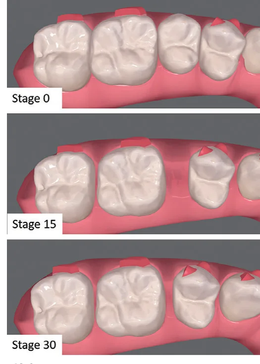

نسخه استخراجشده؛ ترجمه یا تأیید علمی انجام نشده است. وضعیت: captured
مسیر کار الاینر یک زنجیرهی دیجیتال است: اسکن داخلدهانی ← طرح درمان مجازی ← تأیید درمانگر ← پرینت و ترموفرمینگ ← تحویل مرحلهای.
حلقهی حیاتی این زنجیره، تأیید درمانگر است. نرمافزار و تکنسین طرحی پیشنهاد میدهند که از نظر هندسی درست به نظر میرسد، اما تصمیمهای بالینی همچنان با توست:
⚠️ تأیید بدون بازبینی دقیق، یعنی سپردن طرح درمان به کسی که بیمار را ندیده است — نه صورت او را، نه لثهاش را، و نه رادیوگرافیاش را.
👉 نکتهای که نرمافزار نشان نمیدهد: انیمیشن مجازی همیشه حرکت کامل را نمایش میدهد، اما بیان واقعی (نسبت حرکت انجامشده به حرکت برنامهریزیشده) در بالین کمتر از ۱۰۰٪ است. طرحی که در مانیتور بینقص است، در دهان به اصلاح میانی نیاز خواهد داشت.

پس از تحویل، سه چیز را در هر ویزیت بررسی کن:
نشستن کامل الاینر — بهویژه در ناحیهی خلفی. فضای خالی یعنی حرکت برنامهریزیشده اجرا نشده.
سلامت اتچمنتها — اتچمنت شکسته یعنی آن حرکت متوقف شده است.
پایبندی واقعی — نه آنچه بیمار میگوید، بلکه آنچه شواهد نشان میدهد: میزان سایش الاینر و کیفیت نشستن.
و در بیماران با پایبندی مرزی، از ابزارهای یادآور و پایش استفاده کن — این بخشی از درمان است، نه یک افزودهی فناورانه.
وقتی عدم تطابق دیده میشود، سادهترین واکنش سفارش ریفاینمنت است. اما پیش از آن یک پرسش لازم است: چرا این حرکت اجرا نشد؟
سه علت رایج: پایبندی ناکافی — که با ریفاینمنت حل نمیشود و تکرار میشود. حرکت خارج از توان الاینر — که به تغییر راهبرد نیاز دارد، نه مجموعهی جدید. اتچمنت شکسته یا نامناسب — که با ترمیم یا بازطراحی اتچمنت حل میشود.
ریفاینمنتهای پیدرپی بدون تشخیص علت، درمان را طولانی میکنند و اعتماد بیمار را از بین میبرند.
گاهی پاسخ درست، افزودن سگمنت ثابت یا مینیاسکرو است — نه مجموعهی چهارم الاینر.
نوع سؤال: ساخت کلمه · 5 خانه
حروف منبع: م · ت · م · ی · ر